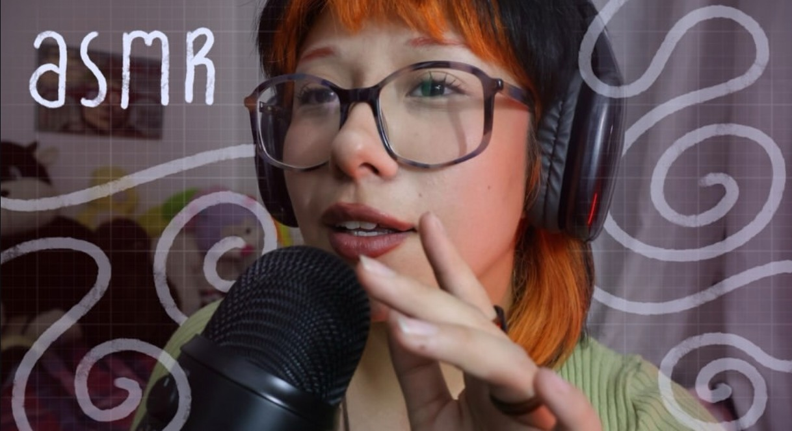

Hola Kmi 👋
Espero que te haya ido increíble en la entrega de tu pintura — quedó preciosa, y lo mejor es que aún no la habías terminado cuando la presentaste. Yo apenas logro una bolita y un palito, ¡JAJA!
Creadora de contenido con alma rockera — una carta-presentación para Kmi

Hola kmi (Foto de ella) espero te haya ido bien en la entrega de tu pintura por que te quedo preciosa y eso que aun ni la habias terminado, yo no paso de dibujar una bolita y un palito para referirme a una persona JAJAJAJAJAAJA, respecto a tu grupo me parece que es mas envidia que otra cosa eres chingona, creativa y simpatica cualidades que ya pocas personas tienen. Me encanto conocer un poco más acerca de ti y la confianza que nos tienes que hasta me platicaste de ti exnovio Jajajajaja que se llama igual que yo. La verdad por lo que me platicaste lo mejor que te pudo pasar es que se hayan separado en mi caso no me veo siendo pareja de alguien que no respete cualquier relación que tenga siendo pareja, familia o amigos.
Mas que nada me gustaria contestarle el video personalizado ella me conto que esta estresada por que se va a cambiar de escuela por lo dificil que es la convivencia con su grupo actual en la escuela, ella estudia comunicacion de artes visuales, se burlaron de ella por hacer videos de asmr. Y por ello esta aplicando a la escuela Esmeralda de la UNAM con lo cual tiene su fecha de examen el 23 y 24 de mayo del presente año por lo cual tiene que estudiar 4 libros. Y esta informacion se la esta ocultando a sus papas por que quiere esperar a los resultados del examen. Esto la ayudara por que se cambiara de una escuela privada a una publica. Y a la par tiene un novio que quiere terminar por que no le habla lindo. Empezo a ir al gimnasio. Y pues me gustaria desearle lo mejor. Sabiendo este contexto dime si te paso un dialogo o que informacion requieres para realizar la pagina web